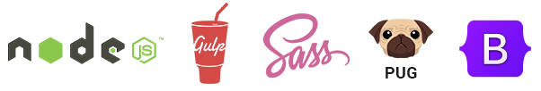

راه اندازی قالب در محیط های مختلف
قالب Finder با استفاده از مجموعه ابزار توسعه مدرن زیر نیز ساخته شده است.
- Node.js وب سایت رسمی
- Node.js یک پلتفرم سمت سرور مبتنی بر موتور جاوا اسکریپت گوگل کروم (V8 Engine) میباشد. دقت داشته باشید که Node.js فریم ورک نبوده و تعریف دقیق آن “محیط اجرایی” یا “run-time environment” میباشد. نود جی اس یک محیط اجرایی رایگان برای زبان جاوا اسکریپت است که کارهای متنوعی انجام میدهد. نود جی اس رایگان است و یک پکیج منیجر بسیار قدرتمند به نام NPM یا Node Package Manager برای آن ساخته شده که نزدیک به نیم میلیون پکیج در آن قرار دارد.
- Gulp وب سایت رسمی
- Gulp ابزاری متن باز و رایگان بوده که به زبان جاوا اسکریپت نوشته شده است. گالپ یک Build System یا Task Manager برای محیط Node.Js و پکیج منیجر npm میباشد. از Gulp در برنامه نویسی و توسعه فرانت اند استفاده میشود. به کمک Gulp میتوان یک سری کارهای تکراری و زمانبر را به صورت خودکار انجام داد. به این ترتیب کار برنامه نویس کمی سبکتر شده و سرعت اجرای پروژه تا حد زیادی بالا میرود.
- Sass (Syntactically Awesome Style Sheets) وب سایت رسمی
- Sass یک زبان اسکریپت نویسی است که به صورت Cascading Style Sheets (CSS) تفسیر یا کامپایل می شود. این بالغ ترین، پایدارترین و قدرتمندترین زبان برنامه افزودنی حرفه ای CSS در جهان است. Sass به شما قدرت متغیرها، میکسین ها، توابع و غیره را می دهد.
- Pug (former Jade) وب سایت رسمی
- Pug یک موتور قالب Node.js با کارایی بالا است. درست مانند SASS، Pug یک پیشفرض است و به این ترتیب به شما کمک میکند تا کارهایی مانند پایان دادن به کارهای تکراری را با ارائه ویژگیهایی که در HTML ساده مانند متغیرها، شامل، میکسها، توابع و غیره موجود نیستند، انجام دهید.
- Bootstrap وب سایت رسمی
- قالب Finder بر روی آخرین نسخه از محبوب ترین چارچوب HTML، CSS و JS در جهان 5 Bootstrap ساخته شده است و به شدت به آن بستگی دارد.
این بخش نحوه راه اندازی محیط توسعه حرفه ای Front-End برای سفارشی سازی سریع و راحت Finder با استفاده از این فناوری ها را توضیح می دهد.
ویرایشگر متن و Terminal (Command Line)
شما می توانید از هر ویرایشگر متنی که در اختیار دارید و (Command Prompt برای ویندوز یا ترمینال در MacOS) استفاده کنید. پیشنهاد ما این است از Visual Studio استفاده کنید. این نرم افزار رایگان است، دارای ترمینال داخلی (کنسول)، سرویس گیرنده git داخلی، اشکال زدایی، کتابخانه برنامه های افزودنی عظیم است و برای MacOS، Windows، Linux نیز در دسترس است.
نصب Node.js و npm
برای اینکه بتوانید محیط توسعه Finder را راه اندازی کنید، باید Node.js و npm را نصب کنید.
Node.js کاملا رایگان است و برای دانلود از طریق وب سایت رسمی آن برای سیستم های MacOS، Windows، Linux در دسترس است. دانلود Node.js و npm
درباره Node Package Manager و بسته های موجود در اینجا بیشتر بخوانید: https://www.npmjs.com
نصب بسته های لازم برای توسعه قالب Finder
وقتی Node.js و npm نصب شد، آماده نصب تمام وابستگی های لازم برای توسعه Finder هستید.
در داخل command line خود کد زیر را تایپ کنید:npm installبا این کار فرآیند نصب تمام وابستگی هایی که در داخل فایل Finder/package.json لیست شده اند نصب خواهد شد. صبر کنید تا نصب تمام شود و به بخش بعدی بروید. کار با Gulp